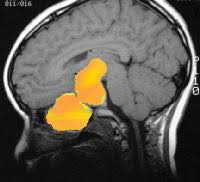

Rathke’s cleft cyst

SYMPTOMS:
If the cyst grows, though, it can press on the pituitary gland or an optic nerve. It can cause symptoms that include:
- Headaches
-
Vision changes, such as blurry vision, loss of peripheral vision or loss of vision.
-
Pituitary failure (hypopituitarism). Depending on the hormones involved, symptoms can include:
- Low sex drive
-
Loss of menstrual period
-
Loss of body or facial hair
-
Growth changes
-
Weight gain or loss
-
Body temperature issues
-
Fatigue
-
Confusion or other mental changes
-
Loss of appetite
DIAGNOSIS
- Exam: We begin with a physical examination and ask you about your symptoms and medical history.
-
Blood test: We will measure the level in your blood of hormones
-
Tests for adrenal insufficiency: We also check for this condition, in which the adrenal glands don’t make enough hormones. Our research found that many women with Rathke’s cleft cyst may also have undiagnosed adrenal insufficiency.
-
Imaging: Most often, we recommend an MRI scan to find a cyst. Scans can also rule out other causes of your symptoms, such as a pituitary adenoma or a craniopharyngioma.
-
Vision testing: We’ll recommend seeing a neuro-ophthalmologist if you’re having vision issues. This doctor specializes in the connection between vision and the nervous system.
TREATMENT
Surgery
Our highly skilled neurosurgeons offer an advanced, minimally invasive procedure called transsphenoidal surgery. The neurosurgeon reaches the cyst through the nose and drains or removes it. This offers you no visible scarring and an easier recovery than with other types of surgery.
In 80-95% of cases, surgeons can remove the cyst completely. After surgery, you will need periodic MRIs to check for regrowth. About 20% of Rathke’s cleft cysts grow back over the next decade.